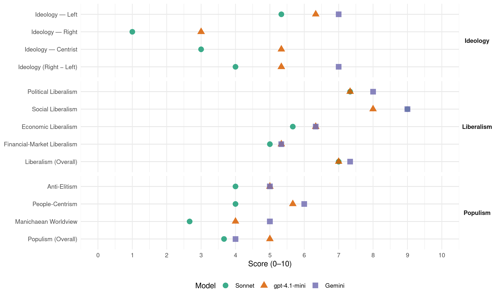

Alternativa (Mexico, 2006)
manifesto_id 171310_200607
Get full text: This site shows derived annotations and short verbatim quotes only. The full manifesto text is © Manifesto Project / WZB — obtain it via manifesto-project.wzb.eu using the manifesto_id above.
Headline scores
| Dimension | Sonnet | gpt-4.1-mini | Gemini |
|---|---|---|---|
| Populism (Overall) | 3.7 | 5.0 | 4.0 |
| Anti-Elitism | 4.0 | 5.0 | 5.0 |
| People-Centrism | 4.0 | 5.7 | 6.0 |
| Manichaean Worldview | 2.7 | 4.0 | 5.0 |
| Ideology (Right − Left) | 4.0 | 5.3 | 7.0 |
| Liberalism (Overall) | 7.0 | 7.0 | 7.3 |
| Political Liberalism | 7.3 | 7.3 | 8.0 |
| Social Liberalism | 9.0 | 8.0 | 9.0 |
| Economic Liberalism | 5.7 | 6.3 | 6.3 |
| Financial-Market Liberalism | 5.0 | 5.3 | 5.3 |
Evidence per dimension
Economic Liberalism
Gemini · score 6.0 · verified · chunk 1
“una eficaz politica antimonopoHo”
que pasa por el impulso de una eficaz politica antimonopoHo, con el objeto de abrir la competencia
Gemini · score 7.0 · verified · chunk 2
“abrir la competencia y bajar los precios”
con el objeto de abrir la competencia y bajar los precios hasta llevarlos a un nivel de competencia frente
Gemini · score 6.0 · verified · chunk 3
“crear una economra de mercado exitosa”
Necesitamos crear una economra de mercado exitosa, capaz de distribuir con justicia la riqueza.
gpt-4.1-mini · score 7.0 · verified · chunk 1
“crecimiento económico con empleo y más y mejor democracia como pilares de un desarrollo”
…En Alternativa, se perfila un Modelo diferente que descansa en el más estricto sentido de atención a las necesidades sociales y del desarrollo nacional, con fundamento en una superación crítica de la experiencia y un compromiso de inclusión de la participación ciudadana en el marco de una nueva institucionalidad. Proponemos un crecimiento económico con empleo y más y mejor democracia como pilares de un desarrollo cruzado por la reivindicación permanente de los derechos humanos…
gpt-4.1-mini · score 6.0 · verified · chunk 2
“abrir la competencia y bajar los precios hasta llevarlos a un nivel de competencia”
una eficaz politica antimonopoHo, con el objeto de abrir la competencia y bajar los precios hasta llevarlos a un nivel de competencia frente a los parámetros internacionales y una polltica económica que lo favorezca en el plano de su despliegue a la par de que ésta sea capaz de incidir en la superación de las insuficiencias estructurales de la infraestructura, la energía, la tecnología y la capacitación del trabajo y su organización y regulación.
gpt-4.1-mini · score 6.0 · verified · chunk 3
“crear una economra de mercado exitosa, capaz de distribuir con justicia la riqueza”
Necesitamos crear una economra de mercado exitosa, capaz de distribuir con justicia la riqueza. Numerosos contingentes de mexicanos, en un número mayor a los asegurados en ellMSS y en eIISSSTE, que trabajan en el medio rural o que se auto-emplean en la extensa economía informal, todavla carecen de acceso a la seguridad social.
Sonnet · score 6.0 · verified · chunk 1
“impulso de una eficaz politica antimonopolio”
que pasa por el impulso de una eficaz politica antimonopoHo, con el objeto de abrir la competencia y bajar los precios hasta llevarlos a un nivel de competencia frente a los parámetros internacionales
Sonnet · score 6.0 · verified · chunk 2
“liberalización de los precios determinados en mercados monopólicos”
promoviendo la liberalización de los precios determinados en mercados monopólicos u oligopólicos, en beneficio de los usuarios grandes, medianos y pequeños
Sonnet · score 5.0 · verified · chunk 3
“economía de mercado exitosa”
Necesitamos crear una economía de mercado exitosa, capaz de distribuir con justicia la riqueza
Financial-Market Liberalism
Gemini · score 5.0 · verified · chunk 1
“acceso efectivo al financiamiento”
mediante el acceso efectivo al financiamiento, la asistencia técnica y capacitación
Gemini · score 6.0 · verified · chunk 2
“reducir las prácticas oligopólicas de las instituciones financieras”
mecanismos de competencia que reduzcan las prácticas oligopólicas de las instituciones financieras en el país
Gemini · score 5.0 · verified · chunk 3
“financiamiento de nuevos proyecto creados por las y los jóvenes”
la reconstrucción de las redes de seguridad socia! y el financiamiento de nuevos proyecto creados por las y los jóvenes.
gpt-4.1-mini · score 6.0 · verified · chunk 1
“carencia de instituciones e instrumentos financieros accesibles para promover las inversiones productivas”
…la precariedad de las finanzas públicas y la carencia de instituciones e instrumentos financieros accesibles para promover las inversiones productivas y el desarrollo…
gpt-4.1-mini · score 5.0 · verified · chunk 2
“mecanismos de competencia que reduzcan las prácticas oligopólicas de las instituciones financieras”
Alternativa ofrece a los ahorradores impulsar, a través de las instancias adecuadas, mecanismos de competencia que reduzcan las prácticas oligopólicas de las instituciones financieras en el país y permitan igualar la estructura de comisiones a los niveles internacionales o de las matrices de los bancos extranjeros que operan en México.
gpt-4.1-mini · score 5.0 · verified · chunk 3
“Canadá sea el cuarto socio comercial de México y éste, a su vez el segundo socio comercial”
En ese ámbito, el símbolo más representativo del acercamiento de nuestro país con América del Norte es el TLCAN, gracias al cual se ha incrementado sustancialmente nuestro intercambio comercial en la región, logrando que Canadá sea el cuarto socio comercial de México y éste, a su vez el segundo socio comercial de Estados Unidos.
Sonnet · score 5.0 · verified · chunk 1
“carencia de instituciones e instrumentos financieros”
la precariedad de las finanzas públicas y la carencia deinstituciones e instrumentos ñnancieros accesibles para promover las inversionesproductivas y el desarrollo
Sonnet · score 5.0 · mixed · chunk 2
“mecanismos de competencia que reduzcan las prácticas oligopólicas de las instituciones financieras”
impulsar, a través de las instancias adecuadas, mecanismos de competencia que reduzcan las prácticas oligopólicas de las instituciones financieras en el país
Sonnet · score 5.0 · verified · chunk 3
“microcréditos y financiamiento para las ideas”
las y los jóvenes consigan microcréditos y financiamiento para las ideas y proyectos que les permitan ser más independientes
Political Liberalism
Gemini · score 8.0 · verified · chunk 1
“respeto a las libertades civiles e individuales”
tan importante es la justicia social como la defensa de las libertades civiles e individuales, los derechos humanos
Gemini · score 8.0 · verified · chunk 2
“asegure la participación democrática”
cambios del marco normativo donde se asegure la participación democrática y el escrutinio de las sociedad toda.
Gemini · score 8.0 · verified · chunk 3
“Estado laico es la mejor garantra de una democracia pluralista”
En este sentido la defensa republicana del Estado laico es la mejor garantra de una democracia pluralista y respetuosa de las libertades.
gpt-4.1-mini · score 8.0 · verified · chunk 1
“la democracia como un conjunto de principios, normas y procedimientos que imponen límites al poder político”
…En Alternativa concebimos a la democracia como un conjunto de principios, normas y procedimientos que imponen límites al poder político y buscan garantizar los derechos fundamentales de las personas; como una forma de gobierno que ofrece las condiciones mínimas necesarias para la competencia partidista y la integración de los órganos de representación popular en un clima de libertades…
gpt-4.1-mini · score 7.0 · verified · chunk 2
“asegure la participación democrática y el escrutinio de las sociedad toda”
una nueva institucionalidad que más allá del cambio cosmético, se adentre a los cambios del marco normativo donde se asegure la participación democrática y el escrutinio de las sociedad toda. Estas son las bases de un Modelo Alternativo y el principio está dado por el pleno respeto a los derechos humanos, la equidad de género y el medio ambiente.
gpt-4.1-mini · score 7.0 · verified · chunk 3
“defensa republicana del Estado laico es la mejor garantra de una democracia pluralista”
El fenómeno de la intolerancia religiosa tiende a Incrementarse cuando el Estado se asimila o da trato preferencial a una sola práctica religiosa. En este sentido la defensa republicana del Estado laico es la mejor garantra de una democracia pluralista y respetuosa de las libertades.
Sonnet · score 8.0 · verified · chunk 1
“la democracia garantiza, además de la ciudadanía”
Tenemos la convicción de que México puede desplegar sus grandes potencialidades económicas si establece nuevas reglas del juego para el ejercicio de la política y del poder y si la democracia garantiza, además de [a ciudadanía polftica, la económica y la social
Sonnet · score 7.0 · verified · chunk 2
“participación democrática y el escrutinio de las sociedad toda”
se adentre a los cambios del marco normativo donde se asegure la participación democrática y el escrutinio de las sociedad toda
Sonnet · score 7.0 · verified · chunk 3
“la democracia, la transparencia, la pluralidad”
debe sustentarse en la fuerza del Estado contemporáneo que reside en la democracia, la transparencia, la pluralidad, la defensa de los derechos humanos
Liberalism (Overall)
Gemini · score 7.0 · verified · chunk 1
“respeto a las libertades civiles e individuales”
tan importante es la justicia social como la defensa de las libertades civiles e individuales, los derechos humanos
Gemini · score 8.0 · verified · chunk 2
“asegure la participación democrática”
cambios del marco normativo donde se asegure la participación democrática y el escrutinio de las sociedad toda.
Gemini · score 7.0 · verified · chunk 3
“Estado laico es la mejor garantra de una democracia pluralista”
En este sentido la defensa republicana del Estado laico es la mejor garantra de una democracia pluralista y respetuosa de las libertades.
gpt-4.1-mini · score 7.0 · verified · chunk 1
“la democracia como un conjunto de principios, normas y procedimientos que imponen límites al poder político”
…En Alternativa concebimos a la democracia como un conjunto de principios, normas y procedimientos que imponen límites al poder político y buscan garantizar los derechos fundamentales de las personas; como una forma de gobierno que ofrece las condiciones mínimas necesarias para la competencia partidista y la integración de los órganos de representación popular en un clima de libertades…
gpt-4.1-mini · score 7.0 · verified · chunk 2
“pleno respeto a los derechos humanos, la equidad de género”
Estas son las bases de un Modelo Alternativo y el principio está dado por el pleno respeto a los derechos humanos, la equidad de género y el medio ambiente. El Modelo Alternativo se reconoce en un concepto articulado en donde los objetivos del desarrollo, el mejoramiento del ingreso y el progreso tecnológico, se resuelven configurando un patrón productivo que descanse en el mejor aprovechamiento de las ventajas especificas,
gpt-4.1-mini · score 7.0 · verified · chunk 3
“defensa republicana del Estado laico es la mejor garantra de una democracia pluralista”
El fenómeno de la intolerancia religiosa tiende a Incrementarse cuando el Estado se asimila o da trato preferencial a una sola práctica religiosa. En este sentido la defensa republicana del Estado laico es la mejor garantra de una democracia pluralista y respetuosa de las libertades.
Sonnet · score 7.0 · verified · chunk 1
“defensa de las libertades civiles e individuales”
Para Alternativa tan importante es la justicia social como la defensa de las libertades civiles e individuales, los derechos humanos en general y la lucha contra la discriminación
Sonnet · score 7.0 · verified · chunk 2
“participación democrática y el escrutinio de las sociedad toda”
se adentre a los cambios del marco normativo donde se asegure la participación democrática y el escrutinio de las sociedad toda
Sonnet · score 7.0 · verified · chunk 3
“discriminación a lesbianas, homosexuales o personas transgénero”
La discriminación a lesbianas, homosexuales o personas transgénero les coloca en una condición de vulnerabilidad civil tanto frente al mercado laboral
Anti-Elitism
Gemini · score 7.0 · verified · chunk 1
“las élites gobernantes y los poderes fácticos”
la contraparte de las visiones paternalistas: las élites gobernantes y los poderes fácticos ~conómicos, financieros, políticos, medláticos–en México
Gemini · score 3.0 · verified · chunk 3
“romper con los prejuIcIos y los esquemas preestablecidos”
El gran reto de Alternativa es romper con los prejuIcIos y los esquemas preestablecidos que hay sobre la política y los políticos
gpt-4.1-mini · score 7.0 · verified · chunk 1
“las álites gobernantes y los poderes fácticos económicos, financieros, políticos, medláticos”
…el abatimiento de la desigualdad enfrenta otro obstáculo y es la contraparte de las visiones paternalistas: las álites gobernantes y los poderes fácticos económicos, financieros, políticos, medláticos–en México y en el mundo, insisten en separar el crecimiento económico de las estructuras sociales y sus necesidades. Insisten a pesar de que la estrecha vinculación entre esos dos ámbitos es una de las principales causas del estancamiento de las llamadas reformas estructurales necesarias para un mayor crecimiento…
gpt-4.1-mini · score 4.0 · verified · chunk 2
“la política económica ha sido incapaz de jugar su papel”
En México la política económica ha sido incapaz de jugar su papel como instrumento para crear las condiciones de un crecimiento sostenido. Por su apego inflexible a los postulados neolíberales, amén de una crónica debilidad fiscal, se apartó de las políticas de fomento de las actividades económico-productivas y quedó lejos de la capacidad de resarcir las insuficiencias estructurales en la infraestructura, la energfa, la tecnología, la capacitación del trabajo, la vinculación de mercados y ei desarrollo del sistema financiero.
gpt-4.1-mini · score 4.0 · verified · chunk 3
“romper con los prejuIcIos y los esquemas preestablecidos que hay sobre la política y los políticos”
El gran reto de Alternativa es romper con los prejuIcIos y los esquemas preestablecidos que hay sobre la política y los políticos, y una buena manera de hacerlo es con jóvenes que tienen maneras diferentes de pensar y hacer las cosas.
Sonnet · score 6.0 · verified · chunk 1
“las álites gobernantes y los poderes fácticos”
El abatimiento de la desigualdad y la pobreza enfrenta otro obstáculo y es la contraparte de las visiones paternalistas: las álites gobernantes y los poderes fácticos ~conómicos, financieros, políticos, medláticos–en México y en el mundo, insisten en separar el crecimiento económico de las estructuras sociales
Sonnet · score 3.0 · verified · chunk 2
“desarrollo nacional altamente concentrado en la actividad y en el capital”
tampoco puede entregarse a la continuidad del desarrollo nacional altamente concentrado en la actividad y en el capital, con base en unas cuantas empresas grandes
Sonnet · score 3.0 · verified · chunk 3
“demasiados intereses mercantiles en juego”
lo que sobra es improvisación, demasiados intereses mercantiles en juego y las disputas por el poder y los negocios del deporte
Ideology — Centrist
gpt-4.1-mini · score 6.0 · verified · chunk 1
“la política cumpla con su función de ser la expresión de intereses diversos y, al mismo tiempo, un espacio para el acuerdo”
…Urge al país que la política cumpla con su función de ser la expresión de intereses diversos y, al mismo tiempo, un espacio para el acuerdo. Necesitamos sustituir la confrontación permanente y nada productiva por un esquema de competencia y colaboración…
gpt-4.1-mini · score 5.0 · verified · chunk 2
“asegure la participación democrática y el escrutinio de las sociedad toda”
una nueva institucionalidad que más allá del cambio cosmético, se adentre a los cambios del marco normativo donde se asegure la participación democrática y el escrutinio de las sociedad toda. Estas son las bases de un Modelo Alternativo y el principio está dado por el pleno respeto a los derechos humanos, la equidad de género y el medio ambiente.
gpt-4.1-mini · score 5.0 · verified · chunk 3
“romper con los prejuIcIos y los esquemas preestablecidos que hay sobre la política y los políticos”
El gran reto de Alternativa es romper con los prejuIcIos y los esquemas preestablecidos que hay sobre la política y los políticos, y una buena manera de hacerlo es con jóvenes que tienen maneras diferentes de pensar y hacer las cosas.
Sonnet · score 4.0 · verified · chunk 1
“constituir un vehículo para las causas”
Esta es la gran responsabilidad de Alternativa: constituir un vehículo para las causas y las propuestas de las ciudadanas y los ciudadanos de campo y la ciudad
Sonnet · score 2.0 · verified · chunk 2
“Modelo Alternativo para el crecimiento sostenible”
Nuevo patrón de desarrollo productivo bajo un esquema descentralizado… este es el Modelo Alternativo para el crecimiento sostenible
Sonnet · score 3.0 · verified · chunk 3
“democracia, la transparencia, la pluralidad”
debe sustentarse en la fuerza del Estado contemporáneo que reside en la democracia, la transparencia, la pluralidad, la defensa de los derechos humanos
Ideology — Left
Gemini · score 7.0 · verified · chunk 1
“combatir la desigualdad de oportunidades”
un instrumento de primer orden para combatir la desigualdad de oportunidades. Es también la oportunidad
gpt-4.1-mini · score 7.0 · verified · chunk 1
“luchar por la justicia social dentro del marco democrático, en libertad y con respeto a la dignidad”
…Por eso refrendamos nuestro compromiso de luchar por la justicia social dentro del marco democrático, en libertad y con respeto a la dignidad de las personas y comunidades…
gpt-4.1-mini · score 6.0 · verified · chunk 2
“la desigualdad deviene ingobemabilidad”
la productividad promedio nacional entra en declive, la eficiencia pais tiende a caerse y la desigualdad deviene ingobemabilidad. Ningún esfuerzo sectorial, particularmente en el sector primario, podrá prosperar de no contar con el progreso del resto de los sectores que en este caso juegan un papel de arrastre y de ahí la importancia de insistir en la propuesta y el compromiso de impulsar el desarrollo descentralizado con base en la integración regional de los sectores,
gpt-4.1-mini · score 6.0 · verified · chunk 3
“crear una economra de mercado exitosa, capaz de distribuir con justicia la riqueza”
Necesitamos crear una economra de mercado exitosa, capaz de distribuir con justicia la riqueza. Numerosos contingentes de mexicanos, en un número mayor a los asegurados en ellMSS y en eIISSSTE, que trabajan en el medio rural o que se auto-emplean en la extensa economía informal, todavla carecen de acceso a la seguridad social.
Sonnet · score 6.0 · verified · chunk 1
“crecimiento económico con empleo y más”
Proponemos un crecimiento económico con empleo y más y mejor democracia como pilares de un desarrollo cruzado por la reivindicación permanente de los derechos humanos, la equidad de género y la defensa de los recursos naturales
Sonnet · score 4.0 · verified · chunk 2
“pobreza de más de 50 millones de mexicanos”
La desigualdad productiva, regional y social, la pobreza de más de 50 millones de mexicanos y la emigración anual de más de 500 mil compatriotas
Sonnet · score 6.0 · verified · chunk 3
“distribuir con justicia la riqueza”
Necesitamos crear una economía de mercado exitosa, capaz de distribuir con justicia la riqueza
Ideology (Right − Left)
Gemini · score 7.0 · verified · chunk 1
“combatir la desigualdad de oportunidades”
un instrumento de primer orden para combatir la desigualdad de oportunidades. Es también la oportunidad
gpt-4.1-mini · score 6.0 · verified · chunk 1
“luchar por la justicia social dentro del marco democrático, en libertad y con respeto a la dignidad”
…Por eso refrendamos nuestro compromiso de luchar por la justicia social dentro del marco democrático, en libertad y con respeto a la dignidad de las personas y comunidades…
gpt-4.1-mini · score 5.0 · verified · chunk 2
“la política económica ha sido incapaz de jugar su papel”
En México la política económica ha sido incapaz de jugar su papel como instrumento para crear las condiciones de un crecimiento sostenido. Por su apego inflexible a los postulados neolíberales, amén de una crónica debilidad fiscal, se apartó de las políticas de fomento de las actividades económico-productivas y quedó lejos de la capacidad de resarcir las insuficiencias estructurales en la infraestructura, la energfa, la tecnología, la capacitación del trabajo, la vinculación de mercados y ei desarrollo del sistema financiero.
gpt-4.1-mini · score 5.0 · verified · chunk 3
“romper con los prejuIcIos y los esquemas preestablecidos que hay sobre la política y los políticos”
El gran reto de Alternativa es romper con los prejuIcIos y los esquemas preestablecidos que hay sobre la política y los políticos, y una buena manera de hacerlo es con jóvenes que tienen maneras diferentes de pensar y hacer las cosas.
Sonnet · score 5.0 · verified · chunk 1
“las álites gobernantes y los poderes fácticos”
las álites gobernantes y los poderes fácticos ~conómicos, financieros, políticos, medláticos–en México y en el mundo, insisten en separar el crecimiento económico de las estructuras sociales y sus necesidades
Sonnet · score 3.0 · verified · chunk 2
“pobreza de más de 50 millones de mexicanos”
La desigualdad productiva, regional y social, la pobreza de más de 50 millones de mexicanos y la emigración anual de más de 500 mil compatriotas
Sonnet · score 4.0 · verified · chunk 3
“distribuir con justicia la riqueza”
Necesitamos crear una economía de mercado exitosa, capaz de distribuir con justicia la riqueza
Ideology — Right
gpt-4.1-mini · score 3.0 · verified · chunk 1
“Estado laico… necesita ser reforzado y defendido ante los ataques de quienes pretenden sustituir la visión civil”
…Una de las mejores garantías del respeto a las diferentes visiones en el marco de la pluralidad y de la ley, es el Estado laico. Este marco de convivencia que nos ha evitado luchas fratricidas, es fruto de muchos años de lucha del pueblo mexicano y ahora necesita ser reforzado y defendido ante los ataques de quienes pretenden sustituir la visión civil de la política y de las acciones de los gobiernos y del Estado, por sus particulares concepciones morales y religiosas…
gpt-4.1-mini · score 3.0 · verified · chunk 2
“la permanente sobrevaluación del peso mexicano”
Siendo la principal razón que aducen los industriales de esta perdida de competitividad industrial es la permanente sobrevaluación del peso mexicano se procurará, a través de las instancias pertinentes, mantener un tipo de cambio de equilibrio, esto es, neutro en cuanto a que no beneficie ni perjudique a los exportaciones ni a las importaciones.
Sonnet · score 1.0 · verified · chunk 1
“soberanía nacional con base en una”
asegure la soberanía nacional con base en una polltica económica pro cíclica, capaz de conducir y sostener los cambios estructurales que el pals necesita
Sonnet · score 1.0 · verified · chunk 2
“acuerdo migratorio con los EUA”
buscar con mayor énfasis un acuerdo migratorio con los EUA que al brindar mayores seguridades a los migrantes se traduzca en mejores salarios
Sonnet · score 1.0 · verified · chunk 3
“soberanía nacional”
teniendo como principio fundamental la soberanía nacional. Cualquier avance en los patrones de convivencia mundial
Manichaean Worldview
Gemini · score 5.0 · verified · chunk 1
“dedicadas sólo a crear un mejor clima”
benefician a la mayoria y no están dedicadas sólo a crear un mejor clima de negocios para una minoría
gpt-4.1-mini · score 5.0 · verified · chunk 1
“posturas paternalistas y autoritarias como vías más efectivas para la justicia social”
…Desigualdad y pobreza tienen un efecto corrosivo sobre la democracia, lo cual explica en buena medida el avance de posturas paternalistas y autoritarias como vías más efectivas para la justicia social. Se trata de un espejismo: las medidas fuera del marco democrático sólo pueden alcanzar soluciones parciales y temporales…
gpt-4.1-mini · score 5.0 · mixed · chunk 2
“la desigualdad deviene ingobemabilidad”
la productividad promedio nacional entra en declive, la eficiencia pais tiende a caerse y la desigualdad deviene ingobemabilidad. Ningún esfuerzo sectorial, particularmente en el sector primario, podrá prosperar de no contar con el progreso del resto de los sectores que en este caso juegan un papel de arrastre y de ahí la importancia de insistir en la propuesta y el compromiso de impulsar el desarrollo descentralizado con base en la integración regional de los sectores,
gpt-4.1-mini · score 3.0 · verified · chunk 3
“¿Que le ofrecen los adultos a los jóvenes mexicanos sino dolor, miedo, violencia y frustración?”
¿Que le ofrecen los adultos a los jóvenes mexicanos sino dolor, miedo, violencia y frustración? No es con más cárceles y detenciones como se erradicará la violencia callejera, porque ésta se inicia en casa.
Sonnet · score 4.0 · verified · chunk 1
“necedad corruptocrática y se niega”
la sociedad mexicana, desde su sector abstencionista hasta el sector que expresa abiertamente su inconformidad, cuestiona esta necedad corruptocrática y se niega a seguir frente al desempleo y la desigualdad presentes
Sonnet · score 2.0 · verified · chunk 2
“injusticia inadmisible, una revelación de un modelo de desarrollo excluyente”
constituye una injusticia inadmisible, una revelación de un modelo de desarrollo excluyente y un factor de progresivo abatimiento
Sonnet · score 2.0 · verified · chunk 3
“fracasos en la economía”
El origen de nuestros fracasos deportivos es muy parecido a los fracasos en la economía, debido a la falta de visión de largo plazo
People-Centrism
Gemini · score 6.0 · verified · chunk 1
“lucha del pueblo mexicano”
es fruto de muchos años de lucha del pueblo mexicano y ahora necesita ser reforzado
gpt-4.1-mini · score 6.0 · verified · chunk 1
“la ciudadanía significa la posibilidad de acceder no sólo al ejercicio de los derechos ciudadanos”
…Para Alternativa la ciudadanía significa la posibilidad de acceder no sólo al ejercicio de los derechos ciudadanos, sino al conjunto de los derechos humanos, en un marco de participación responsable en los asuntos de interés público. La ciudadanía implica contar con información, demandar derechos y cumplir obligaciones…
gpt-4.1-mini · score 6.0 · verified · chunk 2
“asegure la participación democrática y el escrutinio de las sociedad toda”
una nueva institucionalidad que más allá del cambio cosmético, se adentre a los cambios del marco normativo donde se asegure la participación democrática y el escrutinio de las sociedad toda. Estas son las bases de un Modelo Alternativo y el principio está dado por el pleno respeto a los derechos humanos, la equidad de género y el medio ambiente.
gpt-4.1-mini · score 5.0 · verified · chunk 3
“las y los jóvenes consigan microcréditos y financiamiento para las ideas y proyectos”
Las transformaciones en el mundo laboral exigen pensar en que las y los jóvenes consigan microcréditos y financiamiento para las ideas y proyectos que les permitan ser más independientes.
Sonnet · score 5.0 · verified · chunk 1
“entregar a la ciudadanía el poder de pensar”
La respuesta es muy simple: entregar a la ciudadanía el poder de pensar y decidir sobre su futuro. Esta es la gran responsabilidad de Alternativa: constituir un vehículo para las causas y las propuestas de las ciudadanas y los ciudadanos
Sonnet · score 3.0 · verified · chunk 2
“en beneficio de los usuarios grandes, medianos y pequeños”
promoviendo la liberalización de los precios determinados en mercados monopólicos u oligopólicos, en beneficio de los usuarios grandes, medianos y pequeños
Sonnet · score 4.0 · verified · chunk 3
“las aspiraciones del pueblo de México”
responda a los principios que la norman, a las aspiraciones del pueblo de México y al objetivo de fortalecer la presencia independiente
Populism (Overall)
Gemini · score 6.0 · verified · chunk 1
“las élites gobernantes y los poderes fácticos”
la contraparte de las visiones paternalistas: las élites gobernantes y los poderes fácticos ~conómicos, financieros, políticos, medláticos–en México
Gemini · score 2.0 · verified · chunk 3
“romper con los prejuIcIos y los esquemas preestablecidos”
El gran reto de Alternativa es romper con los prejuIcIos y los esquemas preestablecidos que hay sobre la política y los políticos
gpt-4.1-mini · score 6.0 · verified · chunk 1
“las álites gobernantes y los poderes fácticos económicos, financieros, políticos, medláticos”
…el abatimiento de la desigualdad enfrenta otro obstáculo y es la contraparte de las visiones paternalistas: las álites gobernantes y los poderes fácticos económicos, financieros, políticos, medláticos–en México y en el mundo, insisten en separar el crecimiento económico de las estructuras sociales y sus necesidades…
gpt-4.1-mini · score 5.0 · verified · chunk 2
“la política económica ha sido incapaz de jugar su papel”
En México la política económica ha sido incapaz de jugar su papel como instrumento para crear las condiciones de un crecimiento sostenido. Por su apego inflexible a los postulados neolíberales, amén de una crónica debilidad fiscal, se apartó de las políticas de fomento de las actividades económico-productivas y quedó lejos de la capacidad de resarcir las insuficiencias estructurales en la infraestructura, la energfa, la tecnología, la capacitación del trabajo, la vinculación de mercados y ei desarrollo del sistema financiero.
gpt-4.1-mini · score 4.0 · verified · chunk 3
“romper con los prejuIcIos y los esquemas preestablecidos que hay sobre la política y los políticos”
El gran reto de Alternativa es romper con los prejuIcIos y los esquemas preestablecidos que hay sobre la política y los políticos, y una buena manera de hacerlo es con jóvenes que tienen maneras diferentes de pensar y hacer las cosas.
Sonnet · score 5.0 · verified · chunk 1
“las álites gobernantes y los poderes fácticos”
El abatimiento de la desigualdad y la pobreza enfrenta otro obstáculo: las álites gobernantes y los poderes fácticos ~conómicos, financieros, políticos, medláticos–en México y en el mundo, insisten en separar el crecimiento económico de las estructuras sociales
Sonnet · score 3.0 · verified · chunk 2
“desarrollo nacional altamente concentrado en la actividad y en el capital”
tampoco puede entregarse a la continuidad del desarrollo nacional altamente concentrado en la actividad y en el capital, con base en unas cuantas empresas grandes
Sonnet · score 3.0 · verified · chunk 3
“las aspiraciones del pueblo de México”
responda a los principios que la norman, a las aspiraciones del pueblo de México y al objetivo de fortalecer la presencia independiente
Social Liberalism